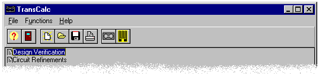
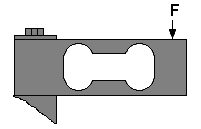

Step 1
Step 1Getting Started
A Project Example
TransCalc creates a “project”, which is made up of one design and multiple circuit refinements. Such projects are named by the user for subsequent storage to disk or printing to paper.

An overview of the TransCalc program can best be achieved by using a conceptual load cell example and going through the various program steps to verify its design as well as its circuit refinements. Our example will be a popular binocular style bending beam.

This example includes ten steps.